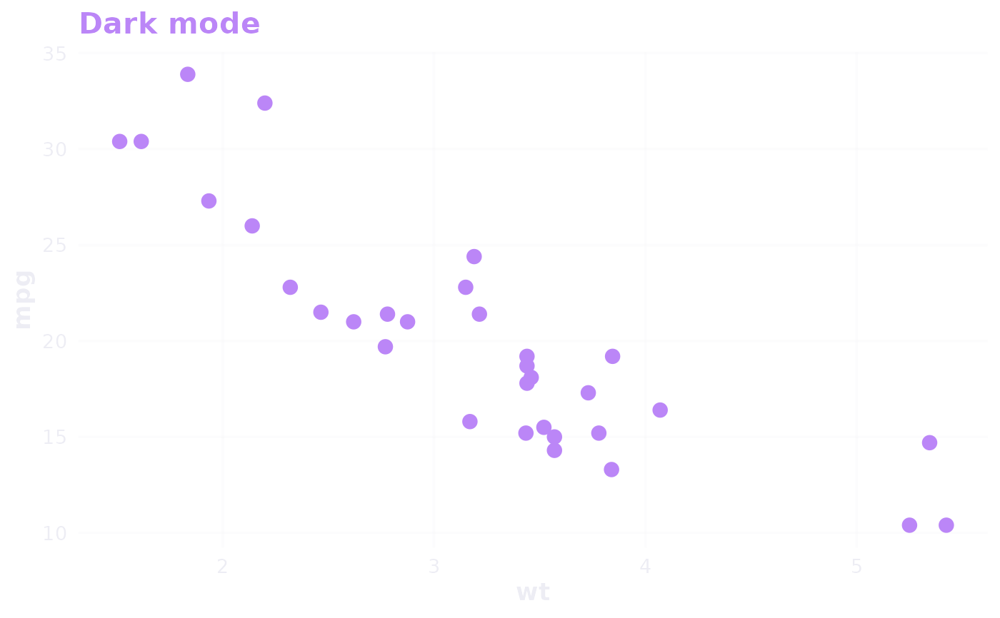

A clean ggplot2 theme using the RLadies+ brand palette. Supports light and dark modes with transparent backgrounds for seamless embedding in branded documents and dashboards.
Usage
theme_rladies(base_size = 13, mode = c("light", "dark"), grid = TRUE)Value
A ggplot2::theme() object.
Examples
library(ggplot2)
ggplot(mtcars, aes(wt, mpg)) +
geom_point(colour = rladies_cols("purple"), size = 3) +
labs(title = "Weight vs Fuel Efficiency") +
theme_rladies()

ggplot(mtcars, aes(wt, mpg)) +
geom_point(colour = rladies_cols("purple_50"), size = 3) +
labs(title = "Dark mode") +
theme_rladies(mode = "dark")
